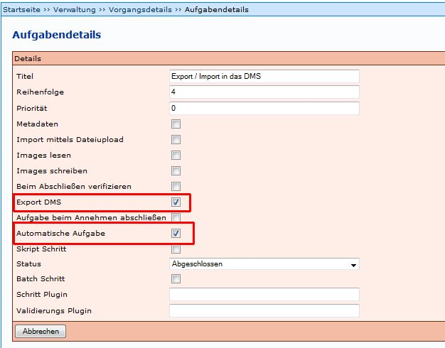
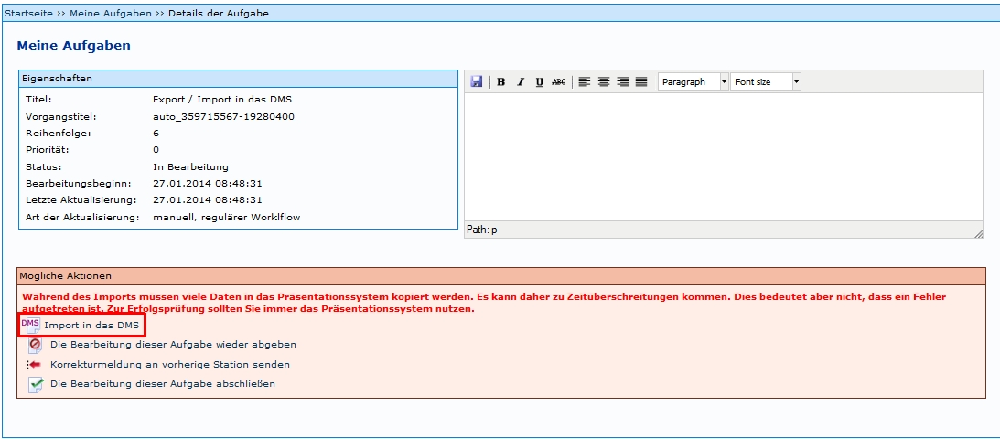
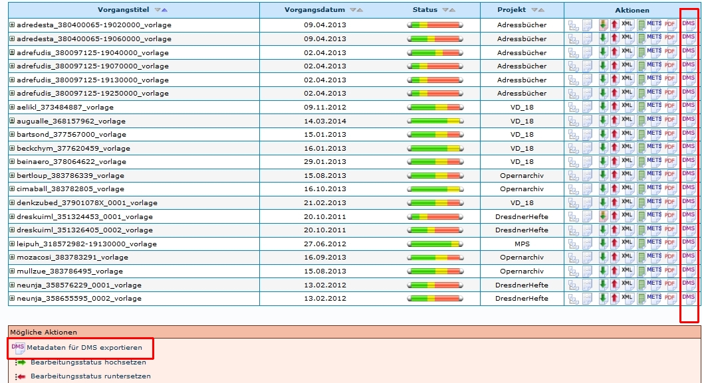
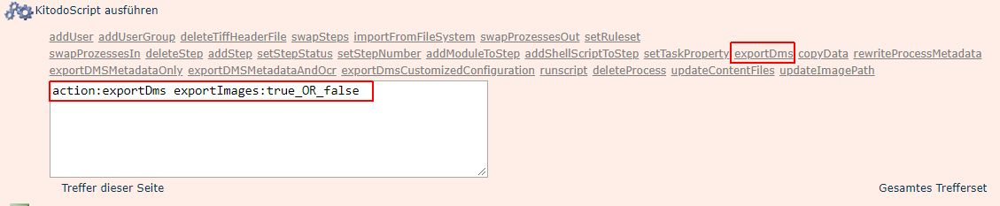

Einleitung
Durch den Export wird ein Vorgang (Images und die Meta- und Strukturdaten) in die jeweilige Präsentation exportiert. Es gibt unterschiedliche Möglichkeiten, wie der Export ausgelöst werden kann:
- Automatischer Export
- Manueller Export
- Administrativer Export
Automatischer Export
Der automatische Export wird ausgelöst, wenn die vorige Aufgabe abgeschlossen worden ist. Der Prozess wird im Hintergrund ausgeführt.
Um den automatischen Export zu aktivieren, müssen zwei Vorraussetzungen erfüllt werden:
- Einstellungen in dem jeweiligen Projekt
- Einstellungen in dem Export-Schritt von Vorgängen, bzw. in der jeweiligen Produktionsvorlage
Projekteinstellungen
In den Projekteinstellungen müssen unter Technische Daten folgende Einstellungen vorgenommen werden:
- bei Automatischer DMS-Export ein Haken gesetzt werden
- bei Erzeuge Vorgangsordner ein Haken gesetzt werden
- bei DMS-Export-Ordner für XML-Datei der entsprechende Pfad eingetragen werden
- bei DMS-Export-Images-Ordner der entsprechende Pfad eingetragen werden

Einstellungen Export-Schritt
Es müssen auch in dem Export-Schritt jedes Vorgangs Einstellungen vorgenommen werden. Dies sollte, wenn möglich unbedingt beim Erstellen der Produktionsvorlage berücksichtigt werden, so dass die Einstellungen beim Anlegen der Vorgänge automatisch übernommen werden.
In den Aufgabendetails des Export-Schrittes müssen Haken gesetzt sein bei:
- Export DMS
- Automatische Aufgabe

Manueller Export
Der Export lässt sich nur mit ausreichenden administrativen Rechten durchführen. Der Benutzer muss zudem der Benutzergruppe Import DMS zugewiesen sein.
Ein Vorgang, der exportiert werden soll, kann über die Liste Meine Aufgaben über Aktionen ausgewählt werden und es wird folgendes Fenster angezeigt.

Der Befehl Import in das DMS löst den Export aus. Dieser wird jedoch nicht, wie beim automatischen Export im Hintergrund ausgeführt, so dass während des Exports keine anderen Aufgaben in Kitodo.Production bearbeitet werden können. Je nach Umfang des Vorgangs, kann dies längere Zeit dauern. Nach erfolgetem Export muss die Aufgabe abgeschlossen werden, so dass der Status der Aufgabe auf grün gesetzt wird und die darauf folgende Aufgabe bearbeitet werden kann.
Zudem kann der Export bei Trefferlisten in der Verwaltung (Nach einem Vorgang suchen) ausgelöst werden:

Bei der Anwendung von Metadaten für DMS exportieren ist unbedingt darauf zu achten, dass sich der Befehl auf die Trefferliste bezieht! Über das Symbol DMS  lässt sich ein einzelner Vorgang exportieren.
lässt sich ein einzelner Vorgang exportieren.
ACHTUNG: Wenn der Benutzer nicht für den Export in das DMS eingerichtet ist, wird der Vorgang nur in das Homeverzeichnis des Nutzers exportiert. Dieser Weg sollte nur in Ausnahmefällen gewählt werden!
Administrativer Export / Export ohne Images
Es ist außerdem möglich Exporte über KitodoScripte exportDms durchzuführen, wie zum Beispiel folgende:
exportDMSMetadataAndOcr
Siehe: exportDMSMetadataAndOcr
exportDms

Wenn diese Funktion ausgewählt wird, wird in dem Eingabefeld der Befehl action:exportDms exportImages:true_OR_false angezeigt. Anstatt true_OR_false muss entweder true ("_OR_false" wird gelöscht) oder false ("true_OR_" wird gelöscht) eingetragen werden.
Wird in dem Eingabefeld der Befehl zu action:exportDms exportImages:false** geändert, werden nur die Metadaten exportiert.
Wird in dem Eingabefeld der Befehl zu action:exportDms exportImages:true** geändert, werden die Metadaten und die Images exportiert.
Die Funktion wird mit den Befehlen Treffer dieser Seite, beziehungsweise Gesamtes Trefferset ausgelöst. Hier ist zu beachten, dass die Ergebnisliste nur die Vorgänge enthält, die auch tatsächlich exportiert werden sollen.
Siehe: exportDms
Weitere Informationen
Tutorial: Export in Kitodo.Presentation